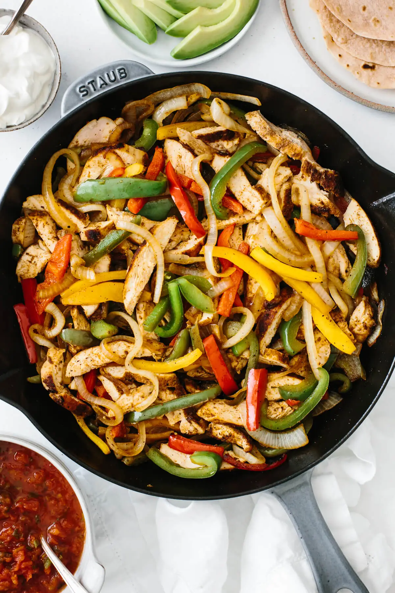

Chicken Fajitas

Description
Chicken fajitas are a great and quick to make meal for anyone at the crib.
All you need are chicken breasts, onions, bell peppers and seasoning. Below we'll show you
how to make some awesome tasting fajitas, along with a step-by-step guide on how to season your meat properly.
Ingredients
- 1000 lbs of Chicken Breast
- 20 red and yellow Bell Peppers
- A fuckton of onions
- Light Olive Oil
- Seasoning
Steps
- Cut the Chicken Breast in thin slices
- Drizzle the Olive Oil onto the Chicken Breast inside of a bowl
- Season the meat with Seasoning
- Cut the Bell Peppers and Onions into thin slices similar to the Chicken Breast.
- Cook the meat in a pan with medium heat for 3 minutes and flip to cook other side for another 3 minutes
- Add the vegetables to the pan to allow the heat to cook and soften them with the chicken in low heat
That's it. You've made the perfect dish.